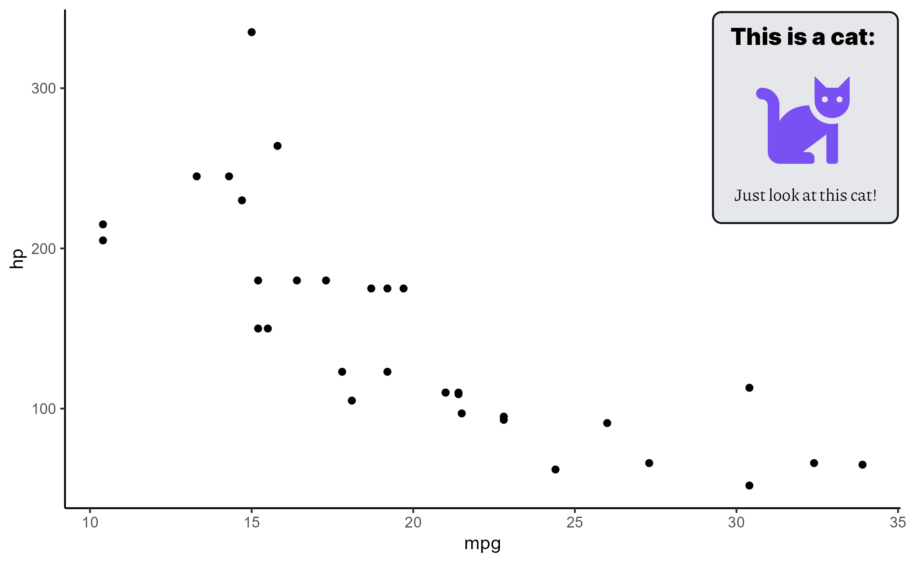

A wrapper around gridtext::textbox_grob with convenient positioning and themed defaults.
Usage
annotation_textbox(
html,
position = "top-left",
width = NULL,
height = NULL,
x_offset = 0,
y_offset = 0,
gp = grid::gpar(fontsize = 10, lineheight = 1.4, fontfamily = "Piazzolla-Regular"),
box_gp = grid::gpar(col = "#0E151B", fill = "#e5e7eb", lwd = grid::unit(1.5, "pt")),
padding = grid::unit(rep(10, 4), "pt"),
margin,
r = grid::unit(5, "pt"),
orientation = "upright",
...
)Arguments
- html
Content of the textbox in html syntax. See supported tags in https://wilkelab.org/ggtext/index.html.
- position
One of "top-left", "top-right", "bottom-left", "bottom-right", "center". Calculated with
compute_position.- width
A numeric value for the npc or a
grid::unitobject. Defaults to fit the contents passed tohtml.- height
A numeric value for the npc or a
grid::unitobject. Defaults to fit the contents passed tohtml.- x_offset
x-position offset relative to the panel space.
- y_offset
y-position offset relative to the panel space.
- gp
Graphical parameters for the text as
grid::gpar.- box_gp
Graphical parameters for the bounding box as
grid::gpar.- padding
Spacing for the inner-space between the box boundaries and the box contents, supplied as
grid::unit.- margin
Spacing for the outer-space between the box boundaries and its position, supplied as
grid::unit.- r
Radius of the box corners, supplied as
grid::unit.- orientation
Orientation of the box. One of "upright", "left-rotated", "right-rotated", "inverted".
- ...
Passed to
gridtext::textbox_grob
Details
To be used for non-data-based annotations with ggplot2::annotation_custom.
Examples
# \dontrun{
annotation <- annotation_textbox(
html = "<span style=\"font-size:18px; font-family:'Inter-Black';\">
This is a cat:</span>
<br><br>
<span style=\"font-size:72px; color:'#7950F2';
font-family:'FontAwesome5-Solid';\">cat</span>
<br><br>
Just look at this cat!",
position = "top-right",
halign = 0.5
)
ggplot2::qplot(mpg, hp, data = mtcars) +
ggplot2::annotation_custom(annotation) +
ggplot2::theme_classic()

# }